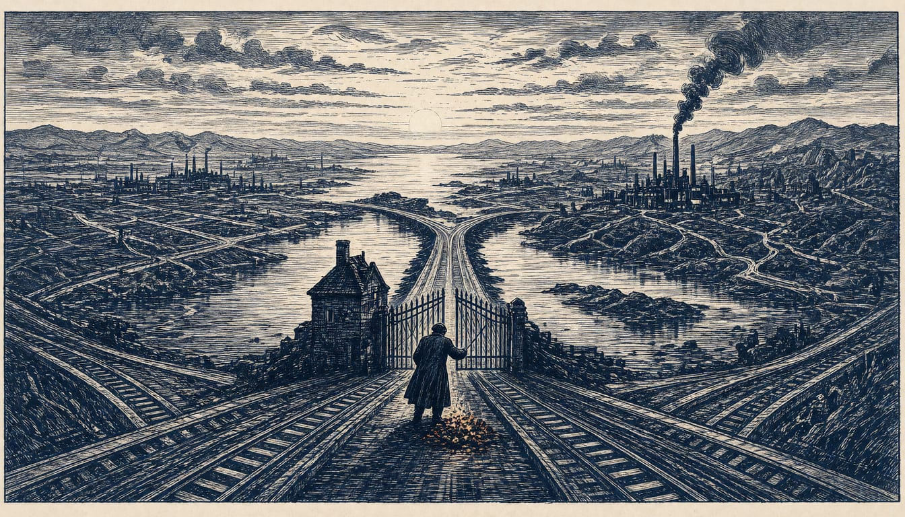

Opinion
Moscow set the fire. Brussels must set the bill.
Estonia answered the GRU's arson attempt alone, with a border closure from 1 December. On Monday the Foreign Affairs Council can turn one capital's countermeasure into a European act, and it should.

A foreign intelligence service tried to burn down a drone factory in Estonia, and the union's answer will be decided, once again, by whichever capital sits nearest the fire. Moscow learned long ago that it can strike one member state at a time without facing all of them. On 14 November 2026 the attempt on Threod Systems in Viimsi failed, because the company's security team, which had followed the security advice given to defence firms, thwarted the break-in, and eight Latvian nationals were arrested on Estonian soil. Estonia now answers with a border closure from 1 December. That is the frontier state doing its duty alone. The union's duty is to turn one capital's countermeasure into a European act, and the Foreign Affairs Council meets on Monday to decide whether it will.
VDD and KAPO ran the case as one across the border from the first night, stopping the arson on 13 and 14 November before anyone was hurt. VDD then searched nine sites in Latvia and seized explosive devices, pyrotechnic articles, ammunition, mobile phones and data storage devices, and prosecutors have asked the court to remand five suspects in custody under an investigation directed by the Prosecutor General. Lithuania's Foreign Minister Kęstutis Budrys draws the conclusion: the traces lead to the GRU, and a service that organises arson on European soil practises state terrorism. Estonia announces the price itself: residents and hauliers have about two weeks to return before the crossings close. What the GRU loses is the traffic it works through, and that is enforcement, not spite. What we lack is a decision.
Maria Zakharova calls the planned closure another outburst of aggressive Russophobia, and RIA Novosti reports for the Kremlin that Tallinn accused Russia without evidence. KAPO's own director, Margo Palloson, says counterintelligence confirmed the GRU coordinated the attack; the Kremlin's military intelligence is named by the service that caught the men. VDD's finding for 2026 is that Russian services recruit citizens of other countries to carry out sabotage in European countries, so the trail back to Moscow is cut. A reasonable capital might add that the closure punishes residents and cargo drivers, not the GRU. Prime Minister Kristen Michal answers that Russian intelligence services exploit border crossings to exert influence over people, and closing them reduces that risk, a price stated in the open rather than denied.
The rule, once written, should hold everywhere: any Russian service the European services catch directing sabotage on union territory is listed jointly, and the measures that follow, the designation, the visa tightening, the border decisions, become EU acts, not one frontier state's bill. Europol should compile and publish the joint dossier from the Estonian and Latvian services, so that no capital can quietly wave a European file aside. Interior Minister Igor Taro had warned with each earlier restriction that further escalation could end in a full closure, and now one small state carries that price alone, with Lithuania's Budrys asking Europe to abandon euphemisms. We refuse to let the cost of defending European industry be billed to whichever capital the GRU strikes next. So Monday's Foreign Affairs Council must adopt the GRU listing, adopt the EU-wide visa tightening and give Tallinn's measure European backing.